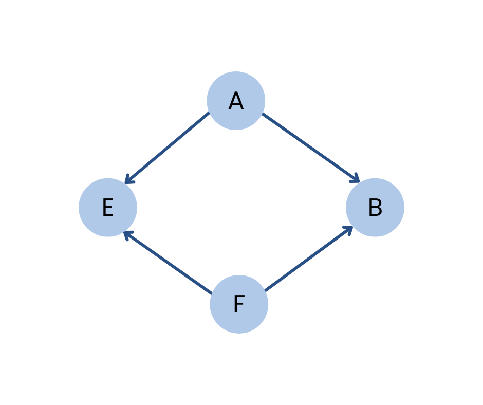

Directed Acyclic Graph (DAG)
A directed graph that does not contain any cycles.

There are four vertices labeled
𝐴,𝐵,𝐸 and 𝐹.This graph contains a cycle.
The The edges have directions, indicated by arrows. The connections are as follows:
𝐴
→
𝐵,
𝐴
→
𝐸,
𝐵
→
𝐹,
𝐹
→
𝐸
This graph has no cycles. There is no path that starts and ends at the same vertex while following the directed edges. This acyclic property is a key feature of a DAG.
Applications
- Task Scheduling:Directed Acyclic Graphs (DAGs) model dependencies in workflows, such as in project management (e.g., PERT, Gantt charts).
- Version Control Systems: Used to track revisions and branches, ensuring no circular dependencies.